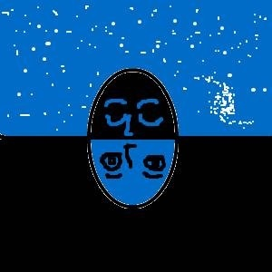

🏠
日
月
縦書き／横書き
| Inner Sea 内なる海 |
| 上村 仁 |
| Kamimura Hitoshi (2013) |
|
まえがき
この本は、長年ブログに書きとめていたものをまとめたものです。
自分なりに感じている、人間のありよう、自分たちの本質について書いたものです。
もう３０年近く、ヨガや太極拳、気功を習ったり教えたりしてきていますが、その中で日々体験し感じた事を元に書きました。
世の中は、ますます複雑化してきています。だからこそ逆に、単純明快な自分たちの本質を忘れずに、絶えずそこへ帰るように努めることが必要なのではないでしょうか。
それは、手放すことであり、日常の雑事を忘れて、解放され、自由になることでもあります。
普段は、気功教室でオリジナルの
「青い海」の気功
というのを教えています。それは、クジラの声の入った音楽を聴いてゆっくりと動きながら、しだいしだいに意識の大海へと溶けて解放されて自由になってゆく気功です。形を覚えるというよりも形から解放されてゆく、とても気持ちのいい気功です。
地球にも地軸があるように私たちの身体にも、中脈という、頭のてっぺんから会陰にかけてまっすぐに伸びるエネルギーの流れる軸があります。「青い海」の気 功を練功しているとその中脈が開いてきます。それが開いてくると体の中心から温泉が湧き上がってくるように気持ちよくなり、全身がエネルギーに満たされる ようになります。
治療院では、気功指圧と言って気を入れながら治療しています。患者さんの身体の中心に向かって、気を入れるように意識し て押しています。すると患者さんの身体の中心から気が湧き上がり内側から癒され、身体が温まってきます。それは、患者さんとの気の交流であり対話とも言え るでしょう。
そして、何事も中心を意識して、中心を開いてゆくことが大切だということを実感として感じるようになります。
この本は、はじめての本で短くまとめてありますが、さし絵を入れて直感的にわかるように書いてあります。ちょっと笑ってしまうような絵ですが、大人のためのスピリチュアルな絵本だと思っていただけると幸いです。
治療や「青い海」の気功に興味のかる方は、「薬師堂気功指圧センター」
のホームページをご覧ください。
photo by(c)Tomo Yun(http://www.yunphoto.net)
しずくの一滴の中に大海がある
しずくの一滴の中に大海があるように、私たちはちっぽけな存在ではなく、宇宙そのものといえる存在です。
観念や概念を使って外に神を求めても、いつまでたっても神に会うことはできません。
目を閉じて内に意識を向ける時に、はじめて意識の大海にいるような深い安らぎや無限に広がる自由、喜びを感じることができるのです。
「私」とは、朝露の一滴のようなちっぽけな存在ではありますが、その内面には意識の大海が広がっているのです。
「青い海」の波の音を聞いていると、しだいに雑念は溶けて意識の大海と一つになってゆくのです。
あなたはすでに悟っている
すべての人はすでに悟っているが、意識が外に向かっているうちは気がつくことはできないと言います。
それはちょうど、太陽はいつも存在しているが地球の影の部分にいる時は、光を見ることができないことに似てます。
「悟り」というとどこか遠い山の向こうにあるような気がするが、それはすぐここ自らの意識の中にあり、無限の愛とエネルギーを放っていると言う。
瞑想をしていて、意識が中心に向けて開かれた時、なんでこんなに幸せで気持ちが良いのだろうかと思います。
そんな時には、この世の浮き沈み、不幸や悲しみが嘘のように感じます。人は、個として人生の荒波に日々もまれていると同時に絶対安心の平安な世界にも同時に生きているのです。
それは、拡大し呑み込んでゆく
大きな円とその円周上の小さな円で、人の意識の構造を表すことができます。
大きな円は、人類全体の意識を表し、その円周上の小さな円は、個人の意識を表します。
瞑想や気功で「私」という意識が溶ける時、しだいに中心の意識が拡大してゆき、個我の意識を飲み込んでいきます。
それは、ちょうど太陽が拡大して、地球を呑みこんでしまうのに似ています。
意識の中心と周辺
人類全体の意識を一つの円と考えた時、その円の中心に芯意識（それは、神とも真とも書けるでしょう）があり、その芯意識が分離して円の表面に浮かび上がっている状態が「私」という意識の状態です。
円の外周には波があり、その波に浮かぶ四角が「個我の意識」を表しています。
個我の意識とは、私たち一人一人の意識のことです。外周の波は、この世が二元的な世界で波のように絶えず変化していることを表しています。
つまり、生と死、良い事と悪い事。善と悪、男と女、プラスとマイナス。喜びと苦悩が、絶えず変化し繰り返しています。
こ の世が楽しい時はいいですが、苦しい時は本当に辛いですね。神経は同じように痛みも快感も感じることができますが、快感はどんなに長くても一瞬に感じるし、激しい痛みはどんなに短くても永遠に感じます。また、幸せであればあるほど、それを失った時には激しい心と体の痛みと
苦しみ
を感じます。
そして、一時的で絶えず変化しているこの世を永遠で確かな存在と錯覚して、執着して依存していることで苦しみや悲しみが生じます。
この世は、二元的な世界
この世は、過去から未来に向かって水平に時間が流れています。そして、陰と陽の二つの世界が絶えずいったりきたりしています。
生きていることで、幸福も快感も善も味わうことができますが、反対に死の恐怖や不幸、苦痛、悪、がセットでついてきます。残念ながら、おいしいところだけ味わうという生き方はできないようになっています。
だ から、天地を貫く縦の時間の中に身を置くことが大切になってきます。目を閉じ、じっと内に意識を向け、深い喜びの中へと溶け込んでゆく。それを知っているのといないのとでは、生き方が大きく違ってきてしまいます。大安心という錨が、この人生という航海にはぜひとも必要なのです。
意馬心猿
この人類全体の中心と周辺の意識の円は、そのまま人間の脳に当てはめる事ができます。つまり円の中心は、間脳であり。円の周辺は、大脳皮質です。思考が止まらないということは、意識と血液が脳の周辺部に集まり、活発に活動しているということでしょうか。
普段の私たちの心の状態は、この絵のような頭の中にあるシーソーが、いつまでもぐるぐると回って止まらない状態と言えるでしょう。昼間は、次から次へと様々 な問題がやってきては去って行き、その対応に追われてしまいます。また、心の中に湧き上がる欲望を満たすために動きまわります。夜になればなったで、過去 を思い出して悔やんだり、将来を心配して不安に駆られたり、夜寝静まってくると特にそれらのことが気にかかりゆっくり休むこともできなくなってしまいま す。だから、頭の中は、いつもぐるぐると思いがめぐって止まらないのです。
こ れでは、心が休まる暇もありません。この回転するシーソーを止めるには、脳の中心にある間脳に意識を集めるより他に方法はありません。シーソーとは、い つも物事を比べて良い悪いを判断している思考のことです。その判断を手放して、静に目を閉じて、脳の中心に向かって鼻から息を吸い込んだり吐いたりしていると、次第に心が落ち着いて安定してきます。さらに瞑想や気功やヨガをすれば、この回転するシーソーを止めることができるでしょう。
縦の時間の流れとは
縦の時間の流れとは、意識の中心へと向かう時間の流れです。
意識もまるでマグマのように意識の中心から流れ出て、意識の表面に出ると横へ横へと広がってゆきます。だから、外へ意識が向いてしまうのは、自然な流れと言えるかもしれません。横へ広がる意識とは、過去、現在、未来という水平方向に広がる時間の流れの中にいることと言えます。
それに対して、意識の中心へと内面を見つめはじめると、しだいに思考は静まり、時間が止まり、永遠の今ここという縦の時間の流れの中に身を置く事になります。
縦は長く、横は短く
縦の時間の流れと横の時間の流れが、実際の自分たちの身体の中で、どのように働いているのかというとを示すと図のようになります。身体の中心、中脈を流れるエネルギーが天地の間を循環しています。
現代では、投資家や企業の欲望が優先され、天地の経綸、法というものが 無視されがちです。資本主義の世のなかでは、すべてに利益が優先されて、個人の自由や 人権がしだいにおろそかにされる傾向にあるように思います。地方の商店街は全滅状態だし、コンビニの店長さんは、夜も寝ないで働かなければならなくなっています。こんなことが許されていいのかと疑問に思いますが、資本主義に毒された人たちは洗脳されて疑問に思うこともありません。
十字架の意味は、横の棒は短く、つまりはこの世への欲望は少なく、縦の棒は長く、天地の法に従って生きなさいということだと思います。縦の時間は、横 の時間の上では、「今ここ」というほんの一点で表されます。つまりは、今ここを気功や瞑想で深めてゆく事が天地の理にかなった生き方をする上で大切なこととな ります。
命は、水に宿る
「命は、水に宿る。」私たち人類も、羊水のなかで自らの命を育んできました。命は、水のなかで一つに溶けている。地球という惑星の水のなかで、胎児のように静に息づいています。きれいな水を見るとそれだけで、心が洗われるのは、私たちの本質が水そのものだからでしょうか。
物事を分け隔て、分断する思考がなければ、私たちが地球という一つの子宮の中で眠る胎児のようなものだということに気づくでしょう。大海のなかにすべての川が流れこむように、私たちの命も大きな意識の大海のなかで一つに溶けているのです。
今、私たちに必要なのは、バラバラに分断された状態から抜け出し、自らが水そのものであり、羊水の中で育ち、いまだに体内にある海に浮かんでいるように、すべたが一つに溶けているということを体感することではないでしょう か。一つの命として生きることが、地球にも人類にも明るい未来を約束するでしょう。
海に浮かぶ意識
私たちの意識は、脳と脊髄が小さな海とも呼べる脊髄液の中に浮かんでいるように、意識の海の中で夢見ています。
「青い海」は、どこにあるのでしょうか。それは、私たちの遠い記憶の中にあるのか。いいえそれは、私たちの脊椎の中にあります。母の胎内でゆれている胎児のように、今でも私たちはその中にいるのです。
「青い海」の気功というオリジナルの気功を教えていますが、それは、脊椎を中心に動かしながら、しだいに命の故郷である「青い海」に帰ってゆく気功です。ゆったりとした音楽を聞きながら私たちの意識はしだいに海に融けてゆき、その温かな慈愛に満ちたエネルギーを感じ癒されて、私という想いも融けて海そのものへと一体化してゆきます。そして、「青い海」 は、いつしか「光の海」へと変化してゆき、私たちの中心が開かれ、そこから流れ出る光と一体化してすべてが光そのものとなってゆきます。そこにはただ光だけがあります。
「青い海」の気功とは
「青い海」の気功とは、長く気功や太極拳を練習しているなかで、自分の内側から自然に湧き上がるようにできあがってきた気功です。ちょうどクジラの声の入った音楽とぴったりと動きがシンクロしていて、この気功のためにできた音楽のようで不思議です。
「青い海」の気功とは、脊椎を前後に波のように動かしながら、しだいに命の故郷である「青い海」に帰ってゆく気功です。ゆったりとした音楽 を聞きながら動いていると、私たちの意識はしだいに海に融けてゆくように、緊張や不安、苦悩から解き放たれて自由に楽になってゆきます。そして、意識の大海の温かな慈愛に満ちたエ ネルギーに満たされてゆきます。やがては、私という想いもすっかり溶けて消えて、意識の大海そのものと一つになってゆきます。
面白い事に、自分の内側から湧きあがった気功でありながら、するたびにいろいろな感覚や発見があり、自分自身が進化し深まってゆくのがわかります。今ここに 書いていることもそのほとんどが、その中で感じたことを元に書いています。とても簡単で短い気功ですが、とても奥深いものがあります。
人間にも気場がある
地球の中心に地軸があるように、人間の身体の中心にもエネルギーの流れる中心軸があります。
地球が磁石であるように人間にも気場があります。
「青い海」の気功をしていると、しだいしだいに中脈というその気の流れる中心軸が開いてきます。そして、身体の中心に気が湧き上がってくるのを感じる事ができるようになってきます。それは、まるで身体の中から温泉が湧きあがってくるように気持ちの良いものです。
頭 のてっぺんから息を吸い、身体の底から地球に向けて息を吐き出してゆきます。すると地球の中心と自分の中心が同期して天地の息吹が吹き抜けてゆくのを感じる事ができるようになってきます。自分が消えてそのエネルギーの柱に溶けて、天地の気の流れの中に溶けて一つになってゆきます。
思考のスイッチを切る

明るい部屋にいたら星を見ることができないように、気や神を感じたいなら、思考のスイッチをオフにして、眼を閉じ意識を内に向けなければなりません。思考でそれらを捉えようとするのは、昼間に星を見ようとするようなものなのです。
実際に「青い海」の気功をしながら動いていると、しだいにそのことがわかるようになってきます。はじめは指先がビリビリと痺れるような感覚が起こりますが、 だんだん腕全体に広がってゆきます。そして、身体の中全体にエネルギーが流れるのを感じることができるようになってきます。もっとも恐れや不安から眼を閉 じ、意識を内に向けることができない人は、感じることができない場合もありますが。
恐れや不安を投げ出して、素直に謙虚に動きに身をまかせれば、だんだん深い意識の世界に入ることができるようになってきます。それは、とても気持ちのいい世界で、実際に体験しなければ、とても理解することはできません。しかし、そのことが体験できれば、まさに自分たちはエネルギーそのものだということに気づくことができるでしょう。
境界の消失
「青い海」の気功で動いていると、しだいに自分と空間の境界が溶けてきてエネルギーの動きそのものになってきます。これは実に気持ちが良いです。どこまでも自由で開放された世界に入って行くことができます。自分たちが最終的に求めていたのはこれなんだなと思います。
そ れは、意外と簡単にわかることができます。そこがこの気功の良いところです。単純な決まりきった動きをするうちにしだいに意識は、内に向かい安心して自分を手放すことができるようになっていきます。日常の中で鎧を着けて守ってきた自己を一枚一枚服を脱ぐように捨てていきます。
するとはじめは饒舌に語っていた個我たちが、しだいに静かになって沈黙の中へと溶けて一体化してゆきます。どんなに大勢いても、最後は一つの気の流れとなって、天地を つなぐ光の柱となって輝いてゆきます。その光は体内を照らして、さらに不浄なものを焼き尽くして浄化してゆくのす。
許しの波動
「青い海」の気功の動きが身体に合って自然に動けるようになれば、許しの波動に包まれて、「自分を愛していいんだよ。このままでいいんだよ。」とどこからともなく語りかけてくるようだと言います。
悲 しみも苦しみも捨てて捨てて捨てて、放して放して手放して、ただ自由にゆったりと動くうちに、自然と人を許し、自分を許し、「あるがまま」の自分に、本来 の純粋な自分に帰ってゆくのです。そんななかで自分に対する思い込みも、他者に対する憎しみや誤解も解消されて、自然とすべてを許し受け入れてゆくので す。
気功の最後は、湖に浮かぶ満月のように純粋に照り渡り、やがて光は湖全体に広がり、その光の中へと「私」という思い込みは溶けて消えてゆくのです。そこには私と他者を分かつ境界はなく、すでに私そのものも存在していません。あるのは、ただ、まばゆいばかりの光だけです。
光球の意味するもの
普段の私たちの意識の状態を説明するのに、映画館を例にとるとわかりやすいです。映写機の光が一番元にあり、その前にフィルムがあり、スクリーンがあり、そして それを見ている観客がいます。私たちは、いつもスクリーンに映された世界を現実として受け止めています。でも、それはフィルムという意識のフィルターを通して 作られた現実で、本当の実在でありません。
気功や瞑想で意識を内に向けるということ は、スクリーンではなく振り返って映写機の光源そのものを見て、それに近づいてゆくことだと思います。そのためには、思考や想念というフィルターを手放す必 要があります、すべてを捨てて、しだいしだいに光そのものと一つに溶けて一体化してゆきます。それが、「青い海」 の気功で言う意識が大海と溶けて一つになるということです。
「青い海」の気功をしていてると
円の中心に
光球を
感じられることがありますが、それは
この意識の中心にある光そのもののように思います。その光は眉間から入り心と身体を浄化して活性化してくれます。それはそれはたいへん心地良いものです。
人生の始まりは、たった一つの卵細胞だった
誰しも人生の始まりは、たった一つの卵細胞でした。人体は、骨や筋 肉、内臓、血管、神経など様々な要素で構成されていますが、それらはロボットのように組み立てられてできたものではありません。元々は、液体で満たされた たった一つの卵細胞が分裂してできたものです。すべての始まりは、一つだったのです。
自 分が一つのものと実感するのは、さほどむずかしいことではありません。仰向けに寝て、誰かに足の指を一つずつ回してみてもらうといいでしょう。こうした マッサージをするのは、全身に振動を伝えることで、自分が水そのものだったことを思いだすためでです。身体に伝わる波が、しだいに雑念や思考 を追い払い遠い昔の一体感の中へと連れ戻してくれます。原初の海に戻された意識は、解放されて意識の根元からのエネルギーを受けとり、リフレッシュされて 再 生されてきます。
分裂し苦悩や難問に満ちた現実から離れて、無心に溶ける心地よさを思い出します。すべては、はじめから溶けているし、すべてが一のなかにあったのです。
人類は、自ら作りだした幻影の中でもがき苦しんでいます。自らの原点に帰って、自由で解放された意識を体験すれば、それらの幻影から抜け出す道を見つけることができるでしょう。
この太陽のように元々は一つだった。
この太陽のように私たちの意識は、元々は一つでした。人生のスタートがたった一個の卵細胞だったことにも似ています。
その一つの意識が二つに分離してしまったのが、今の私たちの意識の状態です。意識の焦点が、光の中心から外れて、表面に移ってしまっています。この分離の苦しみこそが、この世のすべての苦しみ、悲しみの原因です。
分離して個我に芽生えた意識が、瞑想し思考を止めて、中心の意識と再び同調した時に、はじめてすべては一体化し、この分離の苦しみ、悲しみから解放されるのです。
仏像や仏画に描かれる二つの光背の意味が、そこにあるように思います。つまり仏になるということは、元々の一つの意識に帰り一体化するということを表しています。
著者プロフィール
上村 仁
1957
年
5
月
27
日群馬県渋川市生まれ。
１９７６年に中央大学の法学部に入学しました。大学在籍中は、
能楽研究会に入って「能」の練習に明け暮れました。大学の最後の年には、転形劇場という劇団の研究生として身体表現の勉強をしました。
大学卒業後は、当時信濃町にあったヨガ太極拳研究会に入って、太極拳やヨガや野口整体などを習いました。そこで「気」の存在に気づいてからは、その不思議さに魅せられて様々な気功法や太極拳やヨガなどを習ってきました。
一度は、郷里の群馬に戻ってきましたが、再び東京に戻り渋谷にある日本鍼灸理療専門学校に入り、鍼灸、あんまマッサージの資格をとりました。鍼灸は、我孫子にある横田観風先生のところに通って勉強させていただきました。
1990
年に渋川市有馬で薬師堂気功指圧センターを開業。
太極拳は、山口博永先生のもとで陳式老架式を長く練功しましたが、ここのところは友人から小架式を習っています。
気功法は、郭林
新気功や智能気功、禅密気功などいろいろ習いましたが、現在は、自分の内側から生まれてきた「青い海」の気功というオリジナルの気功を中心に教えています。
生まれたのは、日本のへそと言われる渋川市です。大学は、中央大学。「中心」を極めるということが、自分の人生の一つの大きなテーマなのだと思います。「青い海」の気功でも治療でも中心（中脈）を開くことが、もっとも大切なことではないかと思っています。
※この本に関するご質問、ご感想は、
skyhawk889@gmail.com
へ。
また、治療や気功に興味のある方は、
薬師堂気功指圧センター（
http://homepage2.nifty.com/yakusido/index.html
）
のＨＰをご覧ください。
あとがき
この本は、短い本ですので、お手元のスマートフォンや
kindle fire
などの端末に入れて、身近に置いていただけるとありがたいと思います。
今の世の中「自分は、いったい誰かなのか」という一番大切なことを誰も教えてくれないのではないでしょうか。学校も社会も親も、そしてマスコミもそんなことを考えたこともないように、ただ生活に追われて暮らしています。
「自分が誰なのか」ということを明確にして、その上に社会を築いていかないと、ますます世の中は混乱していってしまうのではないでしょうか。これでは、科学技術が進んでも、この間の原発の事故のようにますます世の中はおかしくなっていってしまいます。そして、放射能で大地を汚染してしまったように、我々人類は、いつの間にか地球を破壊し、誰も住めない星に変えてしまいそうです。
このまま外にばかり意識を向けて衝動的に生きて、欲望をコントロールできないとたいへんなことになります。
その点、「青い海」の気功をしていると自然と意識の緊張がほどけ、すべてを忘れて喜びの中に浸れるようになります。内に意識の焦点を置けば、外に出る必要もなく、自然も人も傷つけず、お互いに調和することができるようになっていきます。
気功教室に通ってくれている生徒さんたちとのお付き合いも長くなりました。皆さん、それぞれに深まって喜びを味わっているので、長く続いているのだと思います。気がついたらいつの間にか悟っていた、なんてことになるのではないかと思っています。
普通の人が普通に覚れる時代にならなければ、本当の意味で世の中は変わってこないと思います。この本を読むことで、本当の自分の姿に少しでも気がついてくれるとうれしいです。
以前から本を出したいと思っていましたが、地方に住んでいるとそうしたつてもありませんし、なかなか思い通りにはなりませんでした。しかし、電子書籍が普及してきたおかげで、こうして
Amazon
からはじめて本を出すことができました。
はじめての本で誤字脱字等いろいろと至らないことも多いと思いますが、これからも読みやすく面白い挿絵をいれた、直感的に理解しやすい本を書いていきたいと思います。どうぞよろしくお願いいたします。
最後まで、読んでいただき本当にありがとうございました。
Inner Sea
内なる海
平成２５年３月２７日 第一版発行
平成２５年４月５日 改訂 目次を追加
平成２５年４月１５日 改訂 誤字の訂正
平成２５年４月３０日 改訂 誤字の訂正
著者・発行 上村 仁
Copyright(c)2013.H.K All rights reserved